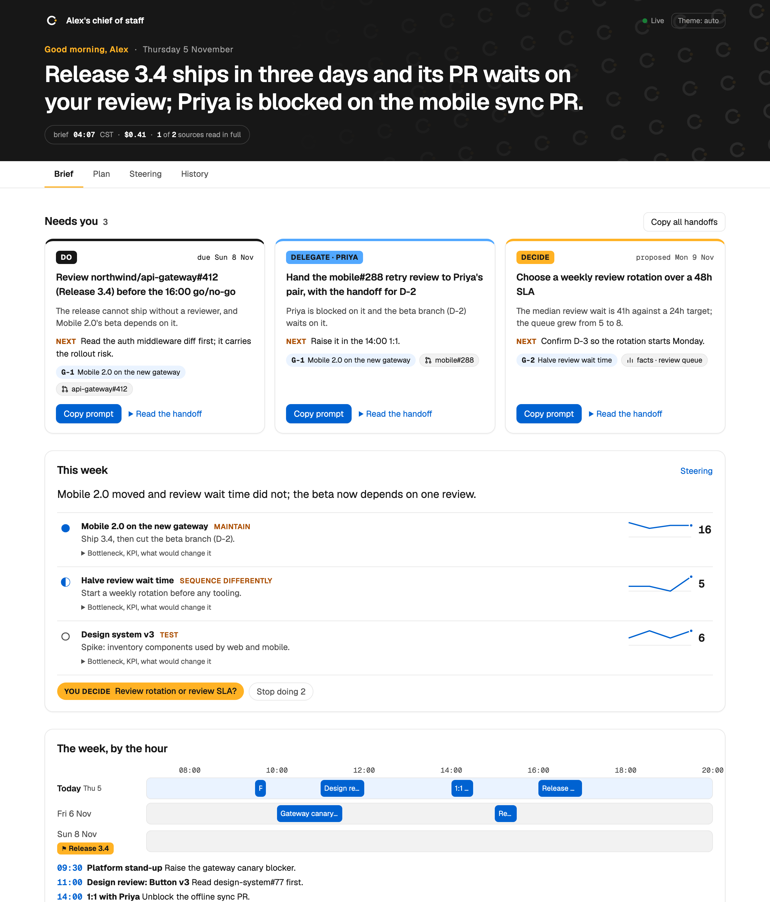
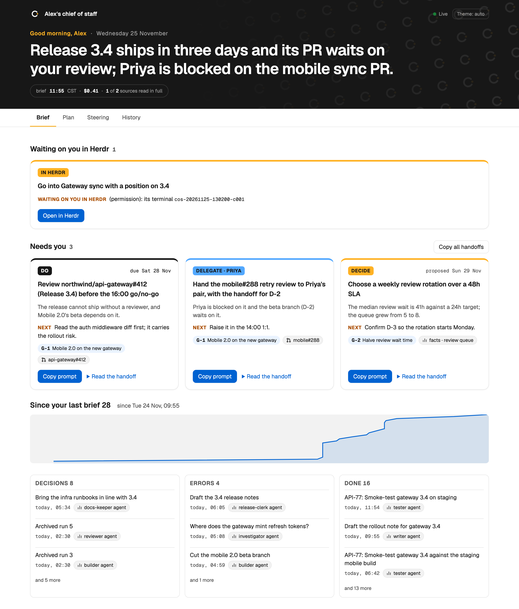
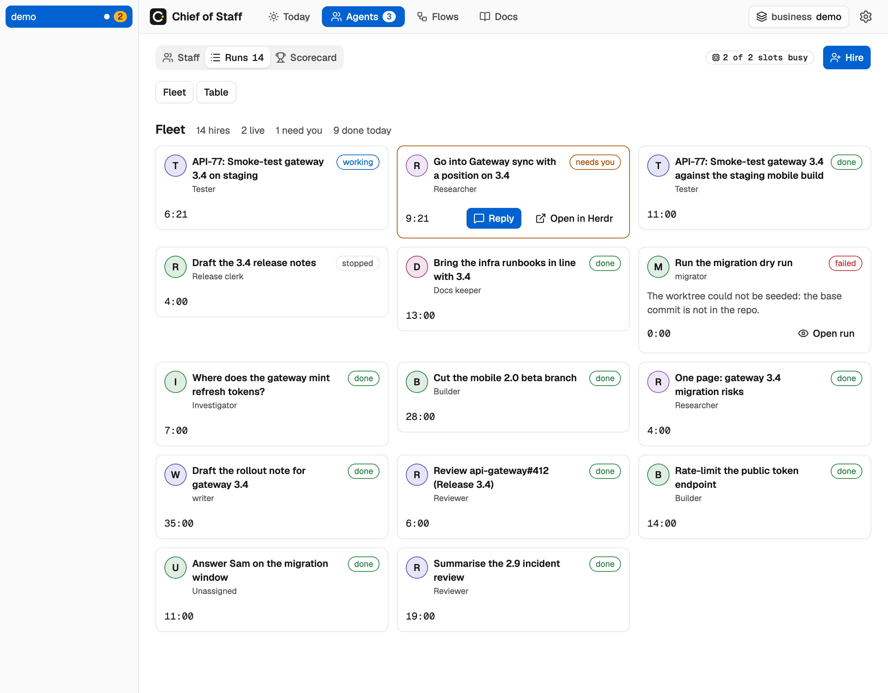
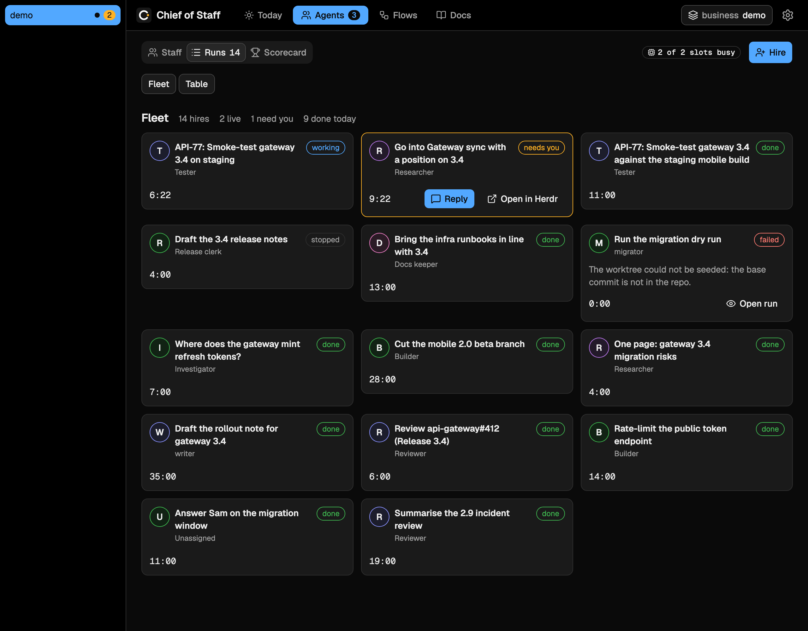
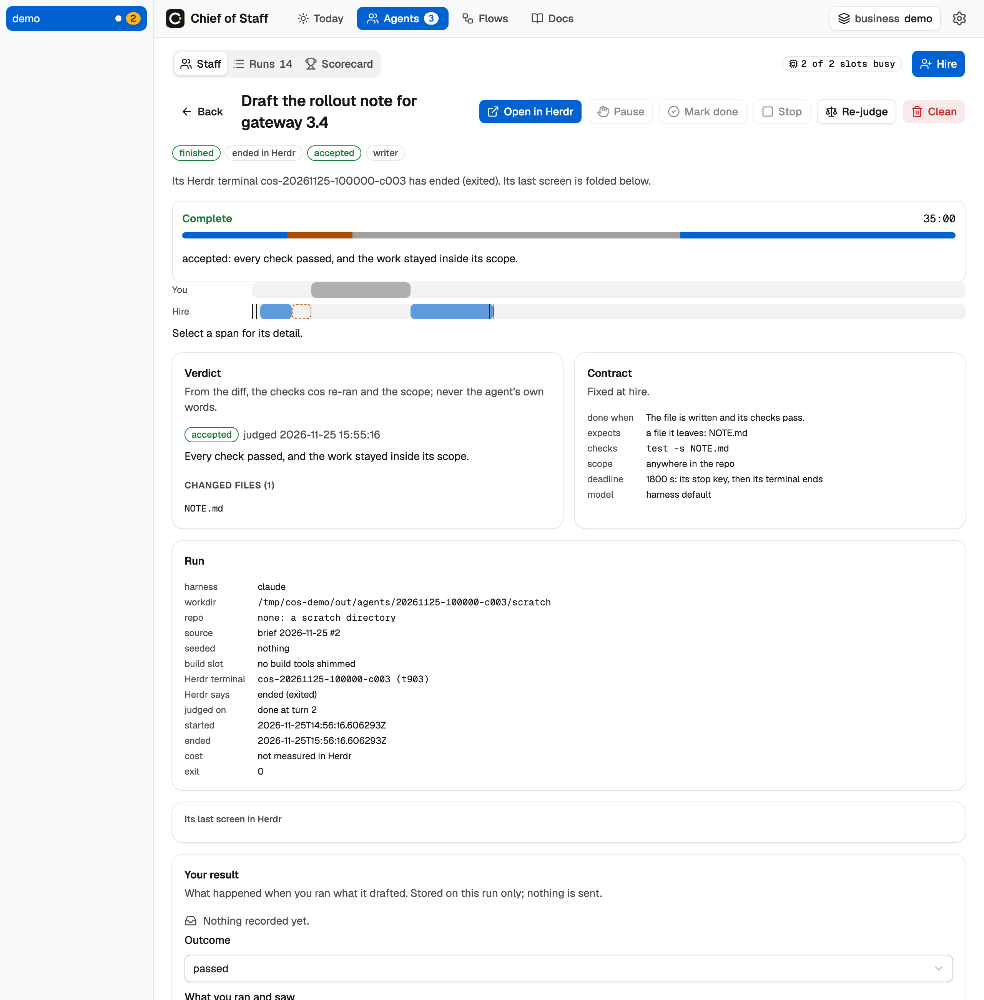
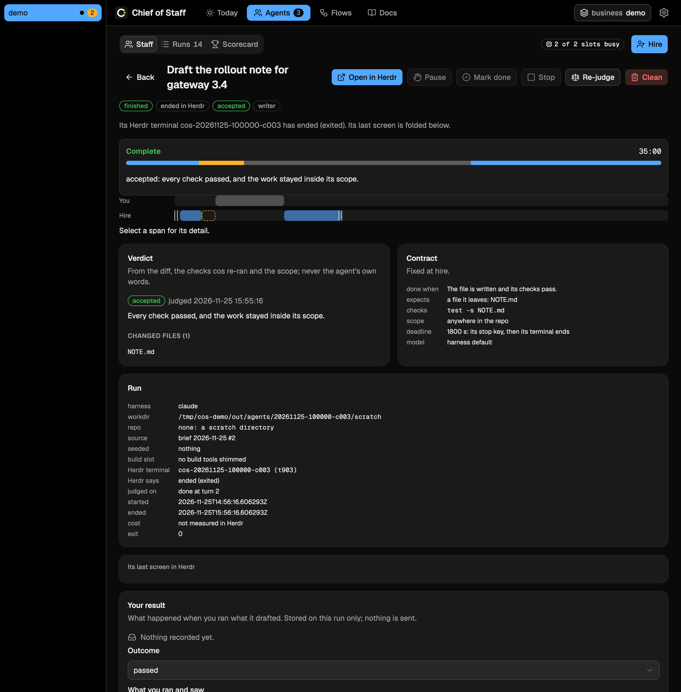
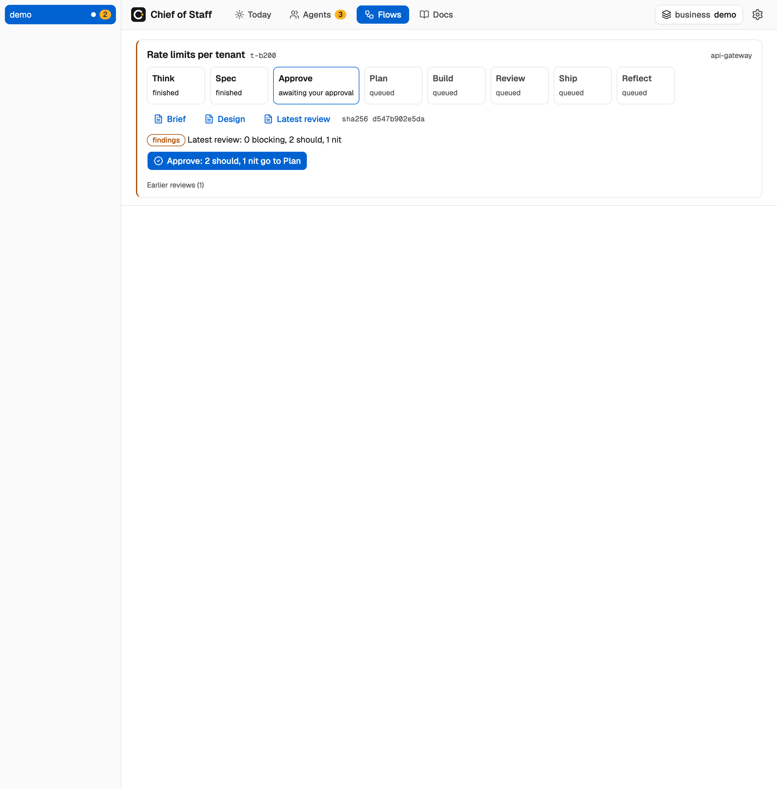
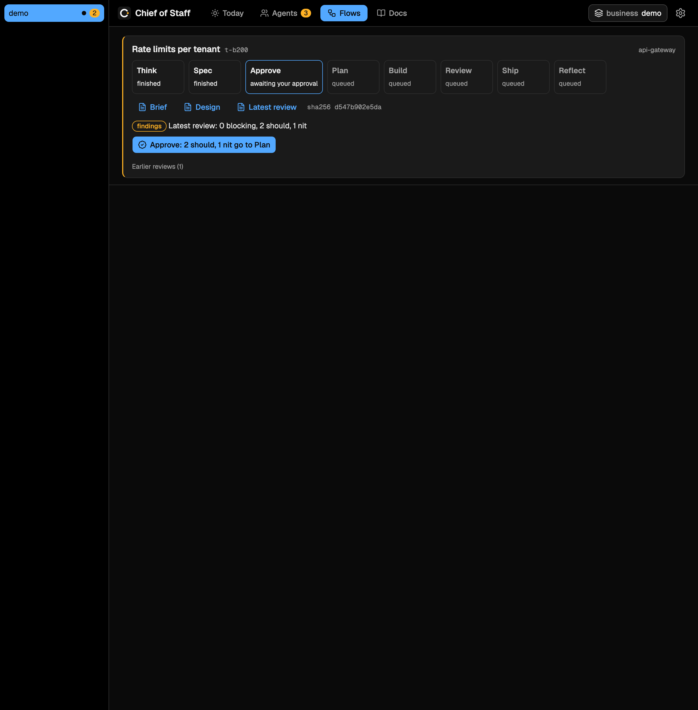

rv2-kit in the desktop app: what you can now see, and what proves it
PR #57, branch feat/desktop-rv2-kit, base e26ad52. Design: 2026-11-25-rv2-kit-desktop-design.md (approved, sha256 bc7c5432…). Ritual epic t-cd6991.
The claim: you can see who needs you, what a run did and what changed since your last brief
Open the desktop app and the Agents tab shows every hire as a fleet card with its role colour, state and active time. A run opens on its phase, clock and a timeline of working, waiting and paused spans. Today opens with the decisions, errors and finished work since your previous brief, and KPI tiles show direction. Flows shows each waiting design's ritual steps and approves it through the same ritual_approve as before.
Today gains "Since your last brief"; nothing above it moved

e26ad52. docs/assets/today.png as committed on main, from task screenshots on the demo home /tmp/cos-demo.
873902c. task screenshots on the demo home, headless Chrome, 2026-11-25 UTC. Items name a role (for example "builder agent"), never a run id.What a person actually sees in the window
Each image below comes from task screenshots, which now runs apps/desktop/examples/preview.rs on the demo home at 127.0.0.1:8793 with the stand-in Herdr and the demo's stand-in cn. They were taken at 873902c, on 2026-11-25 UTC, in headless Chrome at 2× scale.

#tab=agents&pane=runs.

#tab=agents&pane=runs&run=<today>-100000-c003, the demo Writer that was paused then resumed.

#tab=flows.
task screenshots never captured the window before this PR, so the window's before state is visible only by checking out e26ad52 and running the preview.Prove it yourself
- Build the demo home.
Pass: it prints
task demo
demo home ready: /tmp/cos-demo. - Serve the window over the demo home.
Pass:
COS_CN=/tmp/cos-demo/bin/cn cargo run -p cos-desktop --example preview -- /tmp/cos-demo 8793
http://127.0.0.1:8793/#tab=agents&pane=runsshows the fleet, and one card reads "needs you" with Reply. - Run the e2e suite for the new views.
Pass:
task test-e2e
flows_page9 passed andkit_page11 passed. - Run every gate.
Pass: exit 0, with no
task test
test result: FAILEDline. - Prove a pause is a span, not working time, on the stand-in Herdr.
Pass: 1 passed.
cargo test -p cos-desktop --test ipc the_fleet_row_carries_identity_and_clock_and_a_pause_is_one_span
Traps that look like this change and are not
| Symptom | Actual cause | Tell |
|---|---|---|
| Flows tab says "No design is waiting for your approval" on the demo | The preview was started without COS_CN, so it cannot read the demo's Chronis stores | The Flows board frame is empty as well |
| No "Since your last brief" section | There is no earlier ok run receipt before today, so the digest is omitted by design | out/runs/ has no ok receipt for an earlier day |
| An old run shows no word spans | It was hired before the event log existed | The timeline note says word history starts at this version |
kit_page tests all fail at cdp.rs:41 | COS_E2E_CHROME is unset | Run through task test-e2e, which sets it |
What this proves that the tests cannot
The tests prove each component's states and the history's arithmetic. The screenshots show the views render together, on one demo home, in both themes, with real data shapes. They also show where the window had nothing to show before, such as a dimmed paused span.
The WCAG evaluator (axe-core 4.13.0, 24 states, light and dark) found 6 violation nodes before two fixes, and 0 after:
- the timeline lanes needed
role=group; - the Today ribbon's past blocks, at 35 % opacity, fell below AA. That one predates this PR and is time-of-day dependent.
What I have NOT checked
- A real brief. No brief ran on a real business. That would cost about $0.35 and touch real data. KPI points are proven only by tests and the demo.
- A real agent hire. No real hire ran in real Herdr. Hire events come from the stand-in Herdr in tests, and from fixtures in the demo.
- The packaged app. The window was seen only through
preview.rsin Chrome. The installed Tauri app (task desktop-app) was not opened. - Above-AA contrast. axe left 2,227 contrast nodes undecided, against 2,223 documented on 2026-11-17. Nobody checked them by eye.
- Load. Folding the event log for many hires, or a very long run, was not measured.